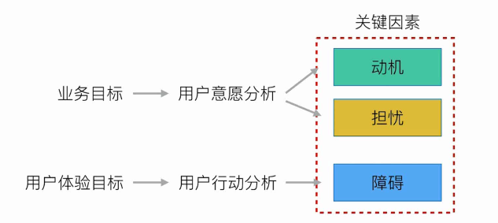

用户体验：用户对于使用或期望使用的产品、系统或者服务的主观感受和反应，包括系统、用户、环境
标签式导航：
抽屉式导航：
隐藏不重要功能，让用户更专注核心功能
能够大大减少主界面中的导航控件数量
抽屉内的功能使用频率降低
下拉式菜单式导航：
收起时：体积小，节省空间
展开时：能显示丰富的导航条目
往往没有关闭按钮
业务需求=业务目的+业务目标
用户需求=目标用户（特征、经验）+场景+行为+体验目标
用户体验路径：搞清楚用户在使用前、使用中、使用后的各个接触点，确保设计方案能够形成闭环
画线框图前需要搞清楚的问题：
目的&目标：目的是达到了某个目标之后想要做的事情，也就是实现目标的真正动机
用户体验的核心，就是用户需求
目标用户是产品或者服务的直接接触对象：目标用户、特征、经验
用户描述的需求，是外在表象。用户体验目标（指用户在使用某一产品或服务时，期望得到的最终成果），才是内在的原因、动机
关键因素：动机、担忧、障碍

PET：关注用户使用前的交互设计
可用性：关注用户使用中的交互设计
PET是说服、情感、信任
流程设计：根据用户使用流程进行页面设计
用户想完成的任务!=产品真正想完成的业务任务，以不干扰用户使用流程的方式完成业务需求
流程设计
1.充分理解业务需求
业务需要达成的商业目标
业务受到哪些技术和商务限制
了解业务所需要的合作方
2.找到用户完成任务的所有接触点
信息架构设计是对信息进行结构、组织方方式以及归类的设计，好让使用者与用户容易使用与理解的一项艺术与科学
1.了解用户、场景、习惯
2.了解业务需求
3.调研竟品的信息架构
4.卡片分类法
用户测试
撰写产品说明书
视觉心理学
接近性：依据间距来判断彼此间的关系，空间上的亲近暗示关系上的亲近
相似性：如果其他因素相同，那么相似的物体看起来属于一组；相似，表明是同类，快速做出判断；对比，表明彼此差异，适当引导；
封闭性：人们倾向于将缺损的轮廓加以补充使成为一个完整的封闭图形
连续性：凡具有连续性或者共同运动方向的物理容易被看做一个整体
对称性：根据视觉元素重量的不同，来营造实现视觉平衡；不平衡，依靠视觉重量引导用户的视觉流；
情感化：色彩帮助营造网站的整体氛围；明确情感需求，并准确转递给视觉童鞋
页面排版布局，就像整理房间，都是在有限的空间内，对特定的信息进行整理/归类/摆放的过程
1.确定页面的任务目的
2.信息元素的组织分类
3.对组块进行排版布局
整体原则：清晰的视觉引导
显示：严谨的页面逻辑关系，突出主要任务流程
弱化：弱化次要流程
删除：删除不必要的功能
隐藏：不能删除的非必要信息
4.权衡平台规范和用户的使用习惯
考虑到成本和市场前景的未确定性，初期采用多平台统一的设计方案
弹窗等直接调用系统控件
Hybrid App设计注意：简化（不重要的动画、动效）；少用（手势、弹窗）；减少（页面内容、控件数量）；增强（页面主次、控件复用性）
平台规范是基础，用户的使用习惯是核心，一切规范终究要给用户习惯让步
5.页面排版的设计验证